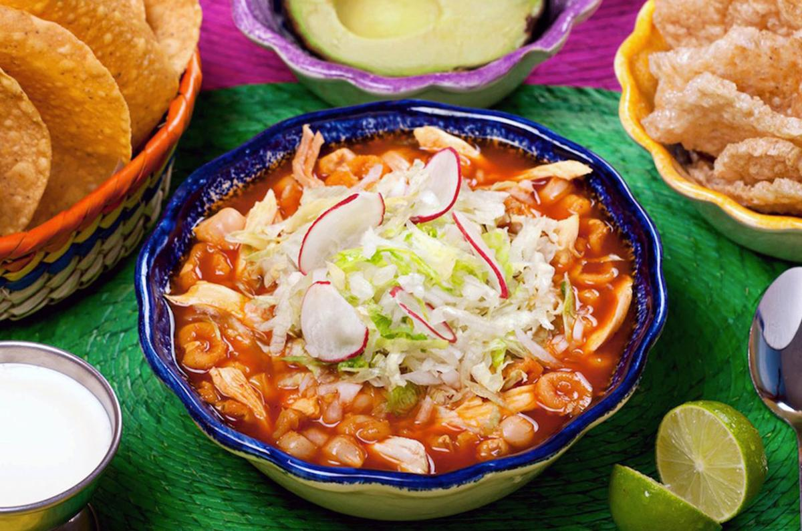

Home
Mexican Pozole Rojo

Description
This pozole recipe is a traditional Mexican pork soup cooked with hominy and flavored with red guajillo chiles for a deep smoky flavor. Serve with shredded cabbage, radishes, onions, or whatever you prefer! Garnish with lime wedges.
Ingredients
For the soup
- 5L Water
- 1 Pound of Pork meat (loin)
- 1 Pound Pork ribs
- 1 1/2 Pound of Corn for pozole
- 1/2 White onion
- 4 Garlic cloves
- 3 tablespoon of Salt
For the sauce
- 14 Ancho chiles
- 14 Guajillo chiles
- 2 Garlic cloves
- 1/2 Medium onion
- 3 tablespoon Salt
- 1/2 tomato pounds
For the garnish
- 1/2 Lettuce
- 1/2 White onion
- Radishes
- Tortillas
- Lemons
Steps
- Place pork loin, and pork ribs in a large pot; cover with water. Add 1 head of garlic and salt to taste. Bring to a boil, reduce heat and simmer until meat is tender and cooked through, about 1 hour. Stir in hominy; bring to a boil and simmer for 20 minutes.
- Meanwhile, place tomato and guajillo chiles in a pot and add enough water to cover; bring to a boil. Cook until chiles have softened, about 15 minutes; drain.
- Place tomato and chiles with salt, 1 clove garlic, oregano, and cumin in a blender; add 2 cups water. Blend until smooth. Strain mixture through a fine-mesh sieve and set chile sauce aside.
- Transfer pork to a work surface and shred with 2 forks. Discard pork bones and garlic.
- Stir chile sauce and shredded pork into the pot. Simmer pozole until flavors have blended, about 5 minutes.
- Ladle pozole into serving bowls and top with shredded cabbage and onion; serve lime wedge on the side.